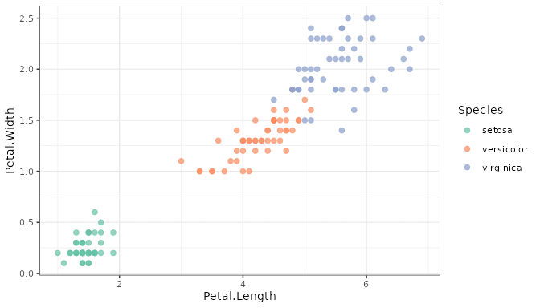
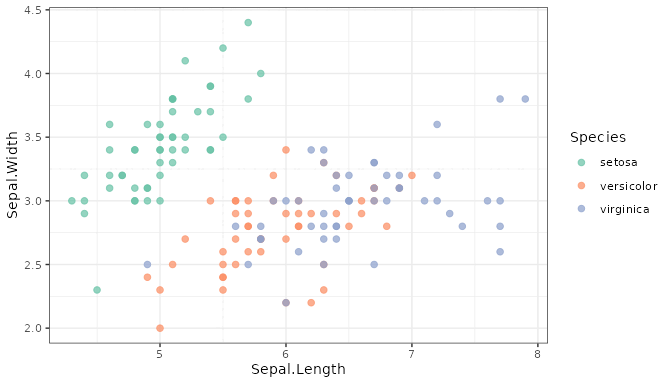
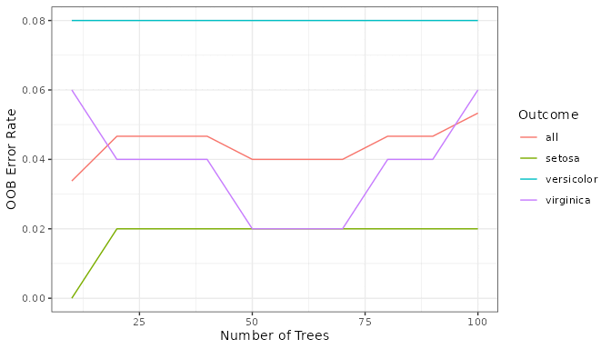
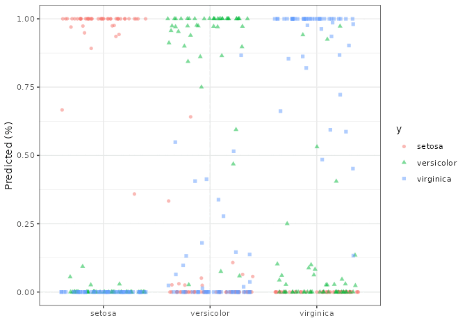
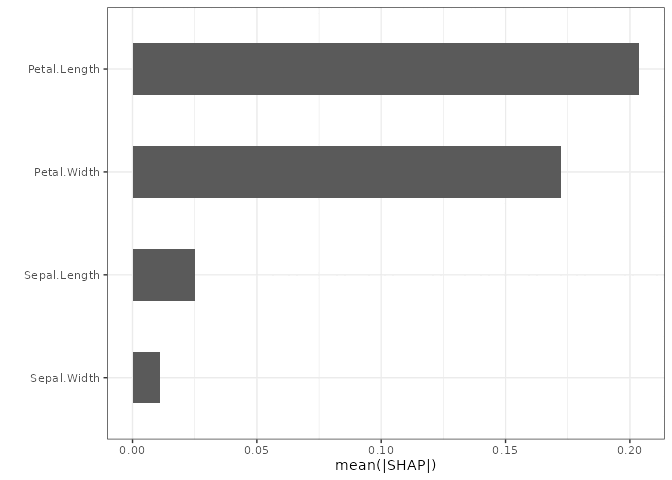
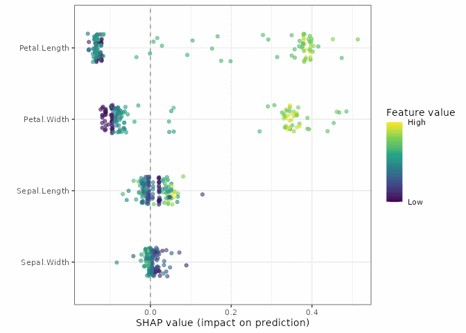
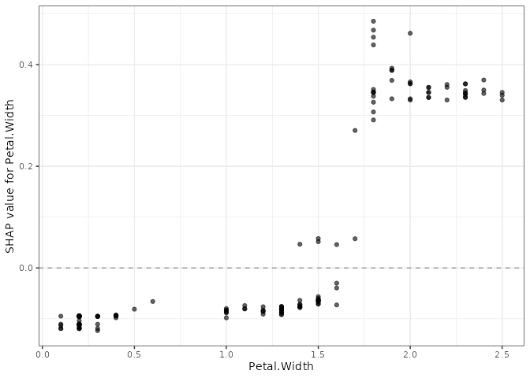
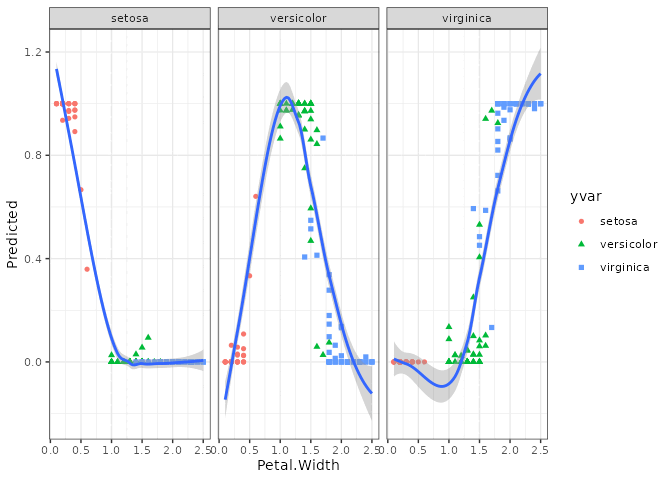
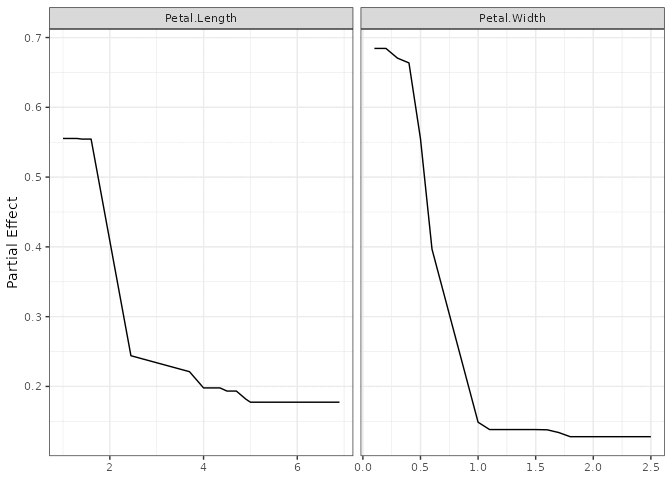
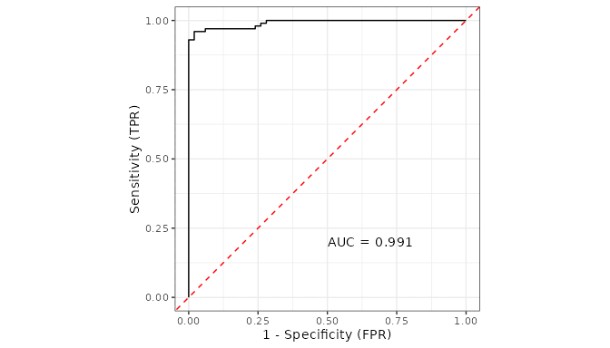

library(ggplot2)
library(dplyr)
library(randomForestSRC)
if (requireNamespace("ggRandomForests", quietly = TRUE)) {
library(ggRandomForests)
} else if (requireNamespace("pkgload", quietly = TRUE)) {
pkgload::load_all(export_all = FALSE, helpers = FALSE, attach_testthat = FALSE)
} else {
stop("Install ggRandomForests (or pkgload for dev builds) to render this vignette.")
}
theme_set(theme_bw())Random Forest Classification with ggRandomForests
2026-07-16
Source:vignettes/ggRandomForests-classification.qmd
Work in progress
This vignette is under active development. Code examples and narrative may change before the next release.
Introduction
Random forests (Breiman 2001) are a non-parametric ensemble method that requires no distributional or functional assumptions on how covariates relate to the response. For classification, each tree votes for a class, and the forest reports the vote fractions as class probabilities. The randomForestSRC package (Ishwaran and Kogalur 2024) provides a unified implementation for survival, regression, and classification forests.
ggRandomForests extracts tidy data objects from rfsrc fits and renders them with ggplot2 (Wickham 2016), making it straightforward to explore how a forest is constructed, which variables matter, and how the predicted probabilities depend on individual predictors.
This vignette demonstrates a complete random forest classification workflow on Fisher’s iris data (Fisher 1936):
- Data exploration — EDA scatter panels, the two variable pairs that separate the three species
- Growing the forest — fitting an RF, checking OOB error convergence
-
Variable selection — VIMP and minimal depth via
max.subtree() -
SHAP analysis — per-observation, per-class additive explanations via
gg_shap() -
Dependence plots — variable dependence and partial dependence via
gg_variable()andgg_partial_rfsrc() -
Classification performance — ROC curves and AUC via
gg_roc()
Data: Iris Flower Measurements
Fisher’s iris data (Fisher 1936) measures sepal and petal length and width for 150 flowers, 50 each from three species: setosa, versicolor, and virginica. It is a small data set, and that is a feature here, not a flaw: every figure in this vignette renders in under a second, and the structure is well-understood enough that any strange behaviour stands out.
data(iris)Exploratory data analysis
Petal measurements separate the three species almost perfectly; sepal measurements do not.
ggplot(iris, aes(x = Petal.Length, y = Petal.Width, color = Species)) +
geom_point(size = 2, alpha = 0.7) +
scale_color_brewer(palette = "Set2")
ggplot(iris, aes(x = Sepal.Length, y = Sepal.Width, color = Species)) +
geom_point(size = 2, alpha = 0.7) +
scale_color_brewer(palette = "Set2")
setosa sits in its own corner of petal space, clean of the other two. versicolor and virginica overlap in both plots, more so on sepals than petals. Keep that overlap in mind — it is the interesting case for everything that follows, since setosa is trivial for the forest to get right.
Growing a Random Forest
We grow a classification forest using all four predictors. The rfsrc() function detects the classification family from the factor response.
set.seed(42)
rfsrc_iris <- rfsrc(Species ~ ., data = iris,
ntree = 200, importance = TRUE, err.block = 5)
rfsrc_iris#> Sample size: 150
#> Frequency of class labels: setosa=50, versicolor=50, virginica=50
#> Number of trees: 200
#> Forest terminal node size: 1
#> Average no. of terminal nodes: 9.75
#> No. of variables tried at each split: 2
#> Total no. of variables: 4
#> Resampling used to grow trees: swor
#> Resample size used to grow trees: 95
#> Analysis: RF-C
#> Family: class
#> Splitting rule: gini *random*
#> Number of random split points: 10
#> (OOB) Brier score: 0.02253931
#> (OOB) Normalized Brier score: 0.10142687
#> (OOB) AUC: 0.994
#> (OOB) Log-loss: 0.11724994
#> (OOB) Requested performance error: 0.04, 0, 0.06, 0.06
#>
#> Confusion matrix:
#>
#> predicted
#> observed setosa versicolor virginica class.error
#> setosa 50 0 0 0.00
#> versicolor 0 47 3 0.06
#> virginica 0 3 47 0.06
#>
#> (OOB) Misclassification rate: 0.04
#>
#> Random-classifier baselines (uniform):
#> Brier: 0.22222222 Normalized Brier: 1 Log-loss: 1.09861229The forest grew 200 trees. The confusion matrix confirms what the EDA suggested: every setosa is classified correctly, while versicolor and virginica trade three misclassifications each way, for an overall OOB misclassification rate of 4%.
OOB error convergence

The setosa error drops to zero almost immediately. versicolor and virginica settle in around 6% each, and the overall rate levels off near 4% well before 200 trees — the forest is not still learning by the time we stop growing it.
OOB predictions

Each panel is one true species; each point is one flower’s predicted probability for one of the three classes. setosa flowers pin their probability at 1 for setosa and 0 for the other two — no ambiguity at all. The versicolor and virginica panels show real spread: most flowers are still classified confidently, but a handful sit in the 0.2–0.6 range where the forest is genuinely unsure which of the two they are.
Variable Selection
Variable importance (VIMP)
VIMP, computed by randomForestSRC, measures the increase in OOB prediction error when a variable’s values are randomly permuted across the out-of-bag observations (Breiman 2001). For a classification forest, gg_vimp() returns one column per class alongside the overall score, and plot() facets on that automatically.
Petal.Length and Petal.Width dominate every facet, Sepal.Length and Sepal.Width barely register — consistent with the EDA. Look closely at the virginica facet: Sepal.Length has a small negative VIMP there (colored differently), meaning permuting it very slightly helped virginica predictions in this fit. That kind of disagreement across facets is exactly what a per-class VIMP breakdown is for; a single overall score would have hidden it. (This is a distinct question from the permutation-vs-varPro comparison covered in vignette("varpro", package = "ggRandomForests"), which contrasts how importance is measured rather than for which class.)
Minimal depth
Minimal depth (Ishwaran et al. 2010) ranks variables by how close to the root node they first split, on average.
md_iris <- max.subtree(rfsrc_iris)The threshold is 1.88, selecting 2 variables: Petal.Length, Petal.Width. VIMP and minimal depth agree.
SHAP Analysis
VIMP ranks importance averaged over the whole forest, and it does not change with the question you ask. SHAP does: a classification forest predicts one probability per class, and gg_shap() explains exactly one of those probabilities at a time, chosen with the which.class argument. Ask for class 1 (setosa) and you get contributions to the setosa probability; switch to class 3 (virginica) and every contribution is recomputed for virginica instead. Nothing else about the method changes — same players, same game, different payout to split.
We target virginica (which.class = 3), the harder of the two overlapping species. With only four predictors, kernelshap runs in exact mode, so explaining all 150 flowers takes about two seconds — no need for the random-sample workaround the regression vignette uses on the larger, higher- dimensional Boston housing data.
SHAP importance
plot(gg_shp, type = "importance")
Same two variables on top as VIMP and minimal depth, Petal.Length ahead of Petal.Width. Three different mechanisms, one answer for the dominant variables — the disagreement worth watching for is further down the ranking, not at the top.
SHAP beeswarm
plot(gg_shp, type = "beeswarm")
Petal.Width shows a clean gradient: the yellow (wide petal) dots sit on the positive side, pushing the predicted virginica probability up; the purple (narrow petal) dots sit on the negative side, pulling it down. That is exactly what you would expect from the EDA scatter — virginica has the widest petals of the three species.
SHAP dependence
plot(gg_shp, type = "dependence", xvar = "Petal.Width")
The upward slope states the same relationship as a number instead of a color: as Petal.Width increases, its contribution to the virginica probability climbs from clearly negative to clearly positive, crossing zero around the point where versicolor and virginica petals start to overlap in the EDA plot.
Variable Dependence
Variable dependence plots
Variable dependence shows each flower’s OOB predicted class probability plotted against a predictor. For a classification forest, gg_variable() returns one probability column per class and plot() facets on it, the same way gg_vimp() does.
gg_v <- gg_variable(rfsrc_iris)
plot(gg_v, xvar = "Petal.Width")
Three curves, three stories: setosa’s probability collapses to zero past a petal width of about 0.6, versicolor peaks in the middle of the range and falls off on both sides, and virginica rises steadily from zero starting around 1.0 — the same three-panel pattern the beeswarm and dependence plots already showed for virginica alone, now visible for all three classes at once.
Partial dependence
Partial dependence integrates out the effects of all other covariates, giving a risk-adjusted view of each predictor’s marginal effect on one class’s predicted probability (Friedman 2001). Unlike gg_shap(), gg_partial_rfsrc() has no which.class argument for classification forests; it defers to randomForestSRC::partial.rfsrc()’s own default, which targets the first factor level, setosa here.
pd <- gg_partial_rfsrc(rfsrc_iris, xvar.names = c("Petal.Length", "Petal.Width"))
plot(pd)
Both curves fall sharply and then flatten near zero — the risk-adjusted version of what the EDA already showed: past a certain petal size, a flower is essentially never setosa. Getting the same kind of curve for versicolor or virginica instead means going back to gg_shap(): re-run it with which.class = 2 or 3, then shap_dependence() on that new object picks up wherever which.class left off.
Classification Performance: ROC and AUC
ROC curves and AUC have no equivalent in the regression vignette — they are specific to classification, where “how well does the forest separate this class from the rest” is itself a well-posed question. gg_roc() computes the curve for one class at a time, indexed the same way as gg_shap()’s which.class, just under the name which_outcome.

calc_auc(roc_virginica)#> [1] 0.9928An AUC of 0.993 for virginica confirms the forest separates it well, even given its overlap with versicolor. setosa’s ROC curve is not worth plotting — it is a right angle, AUC 1, the geometric version of the confusion matrix’s perfect row.
Conclusion
We have walked a full random forest classification analysis with randomForestSRC and ggRandomForests, and the pieces line up:
-
gg_error()showed setosa converging immediately, versicolor and virginica settling near 6% each. - VIMP (
gg_vimp()) and minimal depth (max.subtree()) agreed:Petal.LengthandPetal.Widthdominate, for every class. -
gg_shap()gave the same top variables, but added something VIMP cannot: a signed, additive, per-flower contribution to one class’s probability, chosen withwhich.class. -
gg_variable()andgg_partial_rfsrc()traced the marginal and risk-adjusted versions of the same curves the SHAP dependence plot already hinted at. -
gg_roc()andcalc_auc()closed the loop with the classification-specific question SHAP and VIMP do not answer directly: how well does the forest separate each class from the rest.
The pattern from the regression vignette holds here too. Each gg_*() function returns a tidy object; the plotting is a separate step. Use the package’s plot() methods when the default figure is what you want, and reach for ggplot2 directly when it is not.
References
Breiman, Leo. 2001. “Random Forests.” Machine Learning 45 (1): 5–32. https://doi.org/10.1023/A:1010933404324.
Fisher, Ronald A. 1936. “The Use of Multiple Measurements in Taxonomic Problems.” Annals of Eugenics 7 (2): 179–88. https://doi.org/10.1111/j.1469-1809.1936.tb02137.x.
Friedman, Jerome H. 2001. “Greedy Function Approximation: A Gradient Boosting Machine.” The Annals of Statistics 29 (5): 1189–232. https://doi.org/10.1214/aos/1013203451.
Ishwaran, Hemant, and Udaya B. Kogalur. 2024. randomForestSRC: Fast Unified Random Forests for Survival, Regression, and Classification (RF-SRC). https://cran.r-project.org/package=randomForestSRC.
Ishwaran, Hemant, Udaya B. Kogalur, Eiran Z. Gorodeski, Andy J. Minn, and Michael S. Lauer. 2010. “High-Dimensional Variable Selection for Survival Data.” Journal of the American Statistical Association 105 (489): 205–17. https://doi.org/10.1198/jasa.2009.tm08622.
Wickham, Hadley. 2016. ggplot2: Elegant Graphics for Data Analysis. 2nd ed. Springer. https://doi.org/10.1007/978-3-319-24277-4.